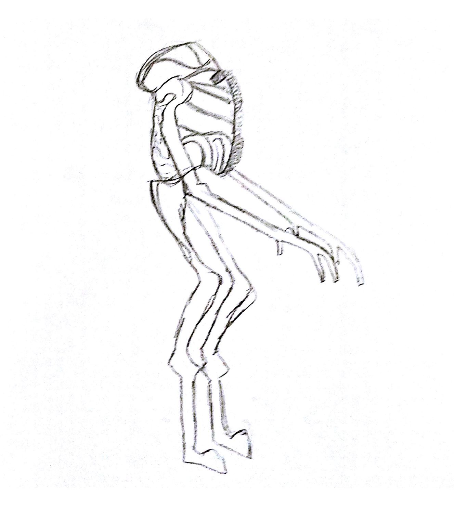
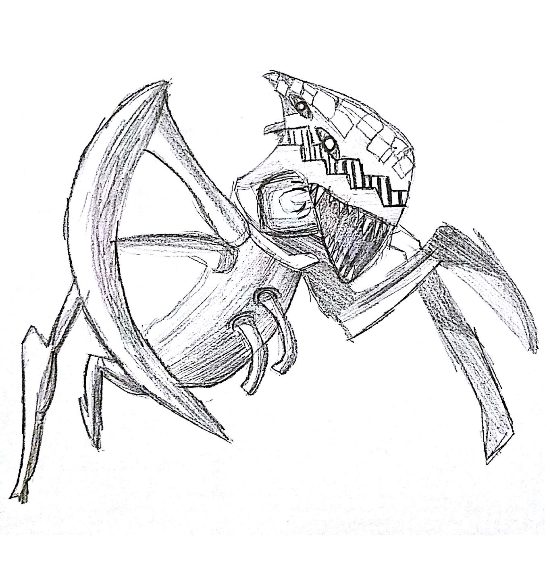

War Stance
On the whole, it is evident that the two novels differ on their stance on war. This stems from the authors’ backgrounds, where Heinlein was fascinated by nuclear warfare, and Haldeman wrote drawing from his previous experience. Citizenship is also considered differently, where in Starship Troopers one has to earn his right to vote, and citizenship is granted from the beginning in The Forever War.
Starship Troopers’ pro-war focus is evident in the support given to war, the choice of words in portraying it, and the teachings of the Terran Federation. Everyone supports the war efforts and collaborates for the duty to the country.
“Everybody, male or female, shall have his born right to pay his service and assume full citizenship” (Chapter 2).
Some people’s objective was to gain the rights to citizenship and this could clearly only be done by participating in the military. Joining the military gave the recruits a collection of rights that they could not have received any other way.
“Had I ever cared about voting? No, it was the prestige, the pride, the status... of being a citizen” (Chapter 11).
The Forever War, as mentioned previously, has a strong anti war stance. The focus of Mandella’s narration is more on the downsides of joining the military experience. He points out not only the weaknesses on the character during the war, but also the pains of returning to civilian life and adjusting to the changes. Starship Troopers fails to mention this aspect of military, discussing only the benefits of life after service, which would certainly not be true, even in that society. A major difference in the magnification of impacts in The Forever War, however, is due to time dilation. Haldeman uses this to to emphasize the superfluous nature of the the Vietnam War. Heinlein, on the other hand, sought to show war in a positive light as he saw it; he was fascinated by it.
 Another layer to the pro versus anti-war stance in these novels is demonstrated by the characteristics of the enemy. In Starship Troopers, the enemies are intelligent and more efficient than the humans. They are fighting not for the sole purpose of killing, but for a greater purpose. Making a statement is of importance in the war in this novel. Meanwhile, the Taurans in The Forever War are killed in a much more isolated way, with less of a purpose. This demonstrates the authors different perspectives on the enemy and the purpose of war.
The differences in the author's framings of citizenship can be seen in examples around the world: much of the western hemisphere offers birthright citizenship through jus soli, based on soil. On the contrary, the eastern hemisphere (primarily Europe and Asia) offer citizenship in some way related to ancestry/blood; if parent(s) are citizens, you were qualified as well. In yet other countries, like Singapore, citizenship is tied to military service. Comparing the consequences of these models to those in our two novels gives us insight as to the implications of the strategies.
Counter Argument - Audio